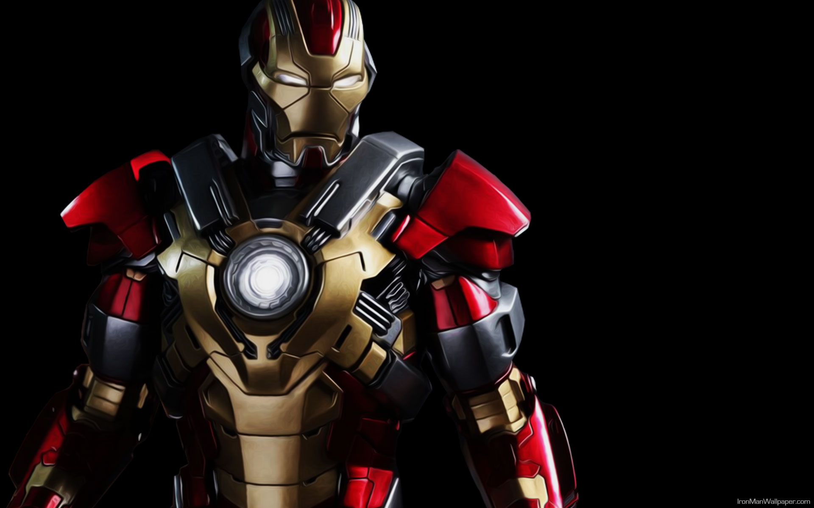

Tengo la responsabilidad de mantener mis inventos fuera de las manos equivocadas - pero tengo una mayor responsabilidad, oponerme al mal camino que pueda tener. Tony Stark pudo haber hecho su granito de arena por ahí, pero sólo Iron Man puede hacer lo que se tiene que hacer...
María Stark tuvo problemas al gestar al hijo de Howard Stark. Después que les dijeran que su hijo no podría sobrevivir, Howard buscó en todo el mundo una manera de curar a su hijo no nacido. Encontró la solución con la Grabadora Rigeliano llamada "451" de la raza alienígena conocida como los Grises, que le prometió que iba a ayudar a Stark y su esposa a recuperar a su niño.
"451" llegó a la Tierra con el fin de detener a los Grises de aplastar a la humanidad tan pronto como los terrícolas estaban tecnológicamente desarrolladose. "451" reveló la intención de los Grises a Howard, y le dijo que tendría que introducir a alguien en la humanidad para acelerar el crecimiento tecnológico del ser humano para el momento en que tendrían que hacer frente a los Grises, y el niño no nacido de Stark era el candidato perfecto. "451" usó la genética del bebé con la tecnología Kree para hacerle uno que elevara a la humanidad, modificando su proceso de pensamiento, por lo que piense de manera diferente, con el fin de ser un experto en la construcción de armamento avanzado. Después de un fallido atentado, uno de los Grises logró decirle a su jefe que "451" había hecho algo con el bebé de Stark. "451" le informó a Stark que los Grises amenazarían a su familia mientras estaban en la Tierra. Junto con un equipo de sus aliados, los Stark Seven, Howard logró matar al jefe de los Grises y obligar a sus matones para abandonar la Tierra, y fueron asesinados en secreto por 451 antes de poder enviar cualquier información sobre el bebé a sus superiores.
Entonces, Anthony Stark nació.
Civil War: ¿Por qué pelearán Iron man y el Capitán América?
David Jiménez Gonzalez